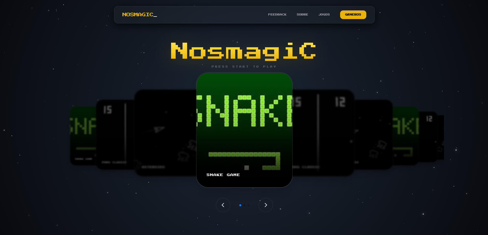
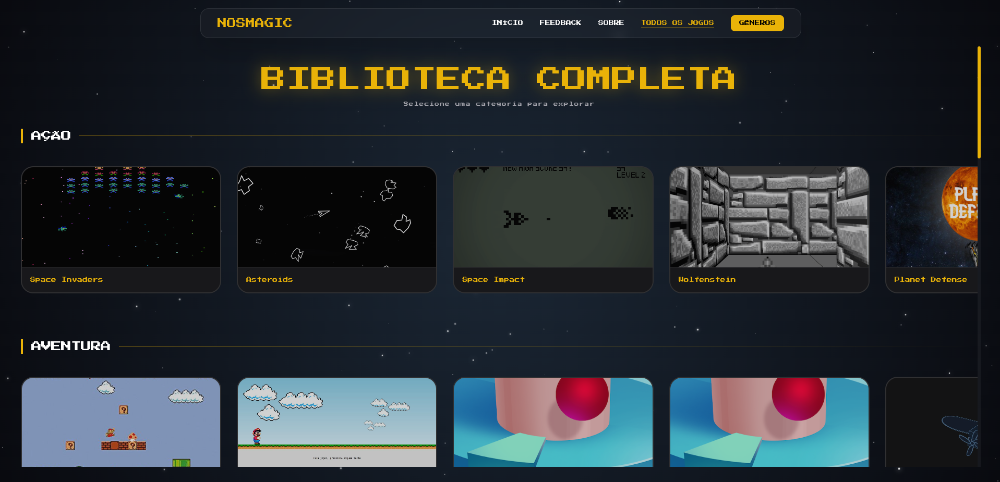
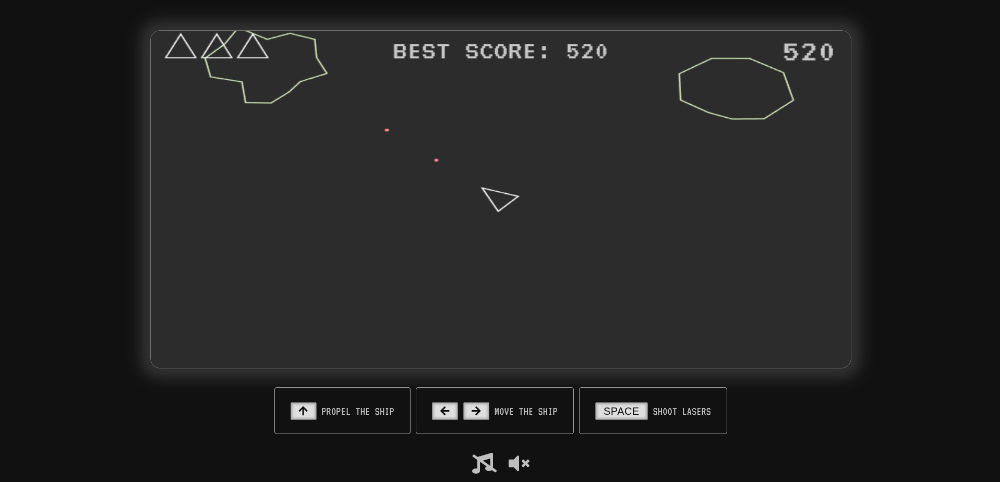

Um hub de jogos para a web
O NosmagiC é um projeto de entretenimento desenvolvido para reunir jogos feitos em JavaScript em uma única experiência web. A plataforma organiza diferentes jogos e estilos em uma interface centralizada, permitindo que o usuário navegue pelo catálogo e escolha o que deseja jogar.
O projeto possui diferentes categorias, como Ação, Aventura, Clássicos, Tiro, Carro, Multiplayer, Cartas, Memória e Raciocínio. Cada categoria direciona o usuário para uma seleção própria de jogos.
Além da organização do catálogo, a interface utiliza uma identidade visual inspirada na cultura dos jogos clássicos, combinando tipografia retrô, fundo espacial, efeitos de brilho, animações e um carrossel interativo para destacar os jogos.
Uma coleção de experiências
Catálogo de jogos
Diversos jogos independentes reunidos dentro de uma mesma plataforma.
Categorias
Organização dos jogos por gêneros como ação, aventura, clássicos, cartas, memória e raciocínio.
Jogos no navegador
As experiências são executadas diretamente no navegador, sem necessidade de uma aplicação desktop.
Interface responsiva
A interface utiliza uma estrutura adaptável para diferentes tamanhos de tela.
Carrossel interativo
Os jogos em destaque são apresentados através de um carrossel interativo com navegação e paginação.
Estética retrô
Tipografia, cores, estrelas, brilhos e elementos visuais reforçam a proposta de nostalgia dos jogos clássicos.
Construção do projeto
Frontend com JavaScript
O projeto é baseado em tecnologias frontend e possui diversos jogos independentes implementados em JavaScript. Cada jogo possui sua própria estrutura de HTML, CSS e JavaScript, enquanto a plataforma principal funciona como ponto de entrada para o catálogo.
Organização da plataforma
A aplicação possui páginas específicas para navegação e categorias, como Ação, Aventura, Clássicos, Tiro, Carro, Multiplayer, Cartas, Memória e Raciocínio. Os jogos são organizados em diretórios próprios e acessados através da interface principal.
Interface e interação
A interface utiliza Tailwind CSS via CDN para a composição visual, enquanto JavaScript controla interações da plataforma, incluindo o menu lateral, geração de estrelas e navegação do carrossel implementado com Swiper.js.
Arquitetura
Frontend estático com jogos independentes executados no navegador. A plataforma não utiliza backend ou banco de dados para sua estrutura principal.